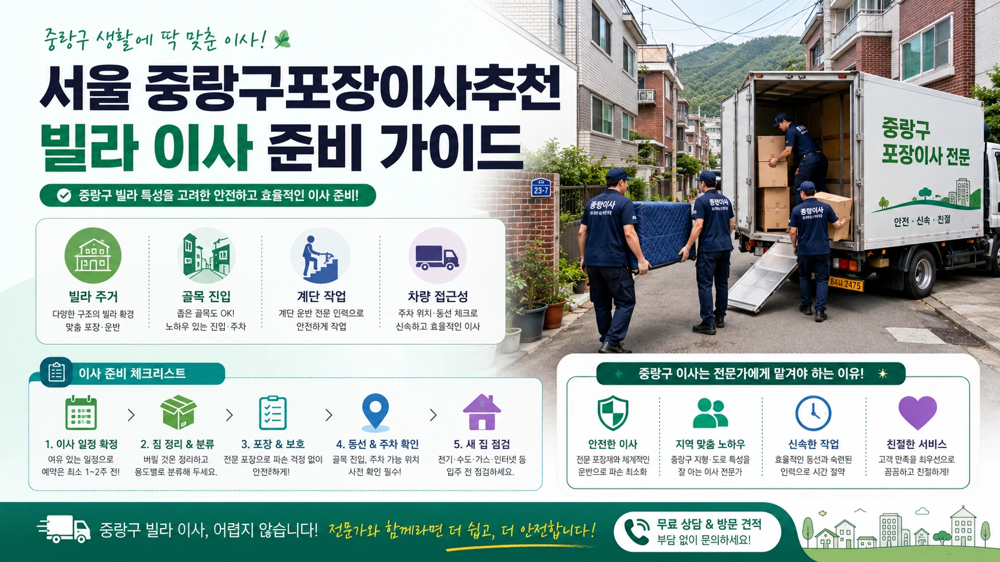
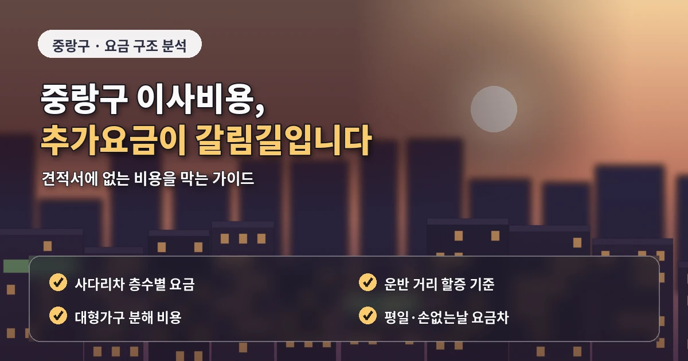

서울 중랑구포장이사추천 빌라아파트 견적 체크
중랑구 포장이사는
빌라와 아파트가 함께 있는 지역이 많아
주거 형태별 작업 조건을 나누어 봐야 합니다.
면목동은 빌라와 다세대주택이 많고,
상봉동은 역세권 아파트와 오피스텔,
망우동과 중화동은 아파트와 주택가가 함께 있습니다.

중랑구 포장이사 비용은
짐의 양만으로 결정되지 않습니다.
견적을 바꾸는 현장 조건
차량이 건물 앞까지 들어갈 수 있는지,
계단 이동이 필요한지,
엘리베이터 예약이 가능한지,
사다리차 설치 공간이 있는지,
주차 협의가 필요한지에 따라 달라질 수 있습니다.
면목동이나 중화동의 빌라 지역은
골목 폭과 주차 위치가 중요합니다.
화물차가 건물 가까이 접근하지 못하면
운반 거리가 길어지고
작업 시간이 늘어날 수 있습니다.
이 조건은 견적 상담 때 정확히 전달해야 합니다.

상봉동이나 망우동의 아파트 단지는
엘리베이터 예약과 관리사무소 규정이 중요할 수 있습니다.
업체 비교 전 살펴볼 기준
화물 엘리베이터 사용 가능 시간,
공용공간 보양,
차량 대기 위치를 확인하면
당일 작업 흐름이 안정적입니다.
중랑구 포장이사 업체추천을 볼 때는
빌라 작업과 아파트 작업 경험을 모두 확인하는 것이 좋습니다.
두 주거 형태는
차량 배치,
인력 운영,
포장 순서,
운반 방식이 다를 수 있습니다.
견적서에는
작업 인원,
차량 대수,
포장재,
가구 보양,
계단 운반,
사다리차 여부,
추가비 조건,
파손 보상 기준이 들어가야 합니다.
포장이사 비교견적은
같은 조건으로 받아야 의미가 있습니다.
출발지와 도착지의 층수,
엘리베이터 유무,
주차 위치,
큰 가구와 가전 목록,
분해가 필요한 물건,
버릴 짐을
모든 업체에 동일하게 알려야 합니다.
추가비용을 줄이는 준비 방법
추가비용을 줄이려면
이사 전 짐 정리가 중요합니다.
책, 의류, 오래된 가구,
고장 난 소형가전,
사용하지 않는 생활용품을 줄이면
작업 시간이 줄어들 수 있습니다.
빌라나 계단 작업이 필요한 집은
짐의 양이 비용에 더 직접적으로 반영됩니다.
중랑구는 중소형 이사 수요도 많습니다.
원룸이나 투룸 이사는 짐이 적어 보여도
주차와 계단 조건이 좋지 않으면
작업 시간이 길어질 수 있습니다.
소형 이사도 차량 접근성과 계단 구조를 확인해야 합니다.
계약 전에 확인할 세부 항목
계약 전에는
추가비 발생 조건을 문서로 확인하는 것이 좋습니다.
계단 운반,
장거리 운반,
사다리차,
가구 분해 조립,
특수 가전 이동 비용이
기본 견적에 포함되는지 확인해야 합니다.
중랑구 포장이사는
빌라와 아파트 조건을 구분해서 비교해야
실제 현장에 맞는 견적을 받을 수 있습니다.
가격만 낮은 곳보다
작업 기준과 추가비 안내가 명확한 업체를 선택하는 것이 안전합니다.
중랑구 포장이사에서
도착지 조건을 함께 전달하는 것도 중요합니다.
출발지는 빌라여도 도착지가 아파트라면
엘리베이터 예약과 보양 기준이 핵심이 됩니다.
반대로 출발지는 아파트지만
도착지가 골목 안쪽 빌라라면
차량 접근성과 계단 이동이 더 중요합니다.
양쪽 조건을 함께 알려야 견적 비교가 정확해집니다.
또한 중랑구는 생활권에 따라 도로 폭과 주차 여건이 다르므로
건물 앞 사진을 준비하면 상담이 쉬워집니다.
업체가 미리 현장 난이도를 파악하면
작업 인원과 차량 배치를 더 현실적으로 잡을 수 있습니다.
이런 준비는 이사 당일 추가비용과 작업 지연을 줄이는 데 도움이 됩니다.
중랑구 포장이사에서는 소형 이사라도 현장 조건을 가볍게 보면 안 됩니다.
원룸이나 투룸 이사는 짐이 적어도 골목이 좁거나 계단 작업이 있으면
작업 시간이 예상보다 길어질 수 있습니다.
특히 면목동이나 중화동 빌라 지역은 차량 정차 위치를 먼저 확인하는 것이 좋습니다.
아파트 이사의 경우에는 엘리베이터 예약과 보양 기준을 확인해야 합니다.
단지마다 화물 엘리베이터 사용 시간이나 차량 대기 위치가 다를 수 있고,
이 조건이 맞지 않으면 작업 순서가 바뀔 수 있습니다.
출발지와 도착지 양쪽 조건을 함께 정리하면 견적 비교가 더 정확해집니다.
중랑구 포장이사 견적을 안정적으로 받으려면
빌라와 아파트 조건을 분리해서 설명하는 것이 좋습니다.
계단 이동, 엘리베이터 예약, 차량 대기 위치를 각각 확인하면
업체별 견적 차이를 더 정확하게 비교할 수 있습니다.
작업 조건을 나누어 기록하면 비교가 쉬워집니다.
자주 묻는 질문
A. 골목 폭, 주차 가능 위치, 계단 이동, 대형가전 운반 가능 여부를 확인해야 합니다.
A. 단지에 따라 엘리베이터 예약과 보양 규정 확인이 필요할 수 있습니다.
A. 짐이 적어도 주차와 계단 조건에 따라 비용이 달라질 수 있어 비교가 좋습니다.